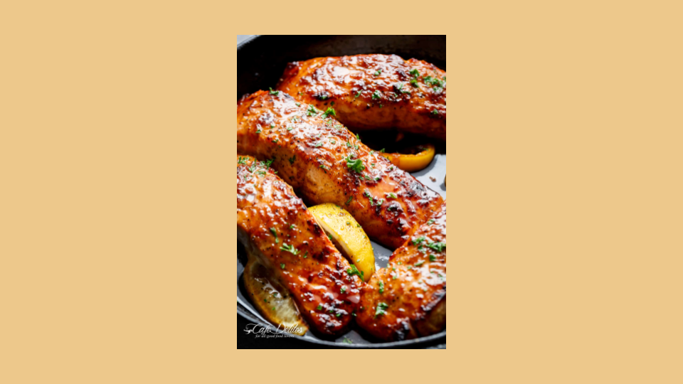

Garlic Salmon

This is one of my favorite recipes for when folks come over for dinner. I've already shared this popular recipe with many of my friends. The best thing is it's so easy to make!
- 1/4 c. dry sherry
- 2 T. soy sauce
- 2 T. vegetable oil
- 2 t. dry mustard
- 3-4 T. freshly minced garlic
- 1 to 2 lbs of salmon filets
Step By Step Directions

- Mix together first 5 ingredients in a shallow dish. Place the cleaned and de-boned salmon filets face down in the mixture and allow to marinate for 1/2 to 1 hour. (Tip, I cut a large piece of salmon into the serving sizes before marinating so the marinade can coat the sides of each piece as well.)
- Preheat the broiler. Transfer filets to a baking sheet, skin-down. Broil the salmon on the top rack for 7 to 9 minutes, or until done to your liking/preference (I like it still pink in the center.)
- I usually serve this with an aromatic rice and a lightly seasoned stir fry.